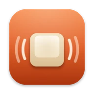
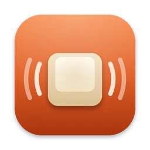

No two keystrokes alike.
Each press shifts pitch by up to 35 cents and level by up to 1.5 dB, the way a real keyboard never repeats itself.

The click you’ve been missing.
Real mechanical keyboard sounds for every key you press, in every app. A tiny, native menu bar app for your Mac.
curl -fsSL https://rustyvibes.kunalbagaria.com/install | bash
Paste into Terminal. Free for macOS 13 or later, Apple silicon and Intel.
The first build is on its way. Check back soon.
Soundpacks
Twenty-one real keyboards, from the crisp click of Cherry MX Blue to the deep thock of Topre. Every pack is trimmed to its transient and loudness-matched, so switching never startles you.
Choose a pack to hear it, then type anywhere on this page. The web preview uses a lighter version of each pack; the app has every key.
Details
Each press shifts pitch by up to 35 cents and level by up to 1.5 dB, the way a real keyboard never repeats itself.
Keys pan with their place on the keyboard. Best with headphones.
Packs recorded with release sounds play them as you let go.
Rustyvibes plays through whatever your Mac is using: speakers, headphones or AirPods.
After 15 seconds of quiet it lets go of the audio device, so it never keeps your Mac awake.
One universal app for Apple silicon and Intel, from macOS 13 Ventura.
Turn on Launch at Login once and forget about it.
Performance
Rustyvibes handles each keystroke in microseconds, then gets out of the way. Stop typing and it stops completely: no CPU, no wakeups, no audio device held open.
Measured on an M2 Max Mac running macOS 26.2 with the release build. Output latency also depends on your audio device.
Privacy
Rustyvibes needs to know when a key goes down, and that’s all it learns. It never sees what you type, never records anything and never touches the network.
It reads which physical key moved, never the letter it makes.
Input Monitoring through a listen-only event tap: it can observe key presses, never change or block them.
No network access, no analytics, no accounts.
In password fields, macOS hides key presses from every app, Rustyvibes included.

Get Rustyvibes
curl -fsSL https://rustyvibes.kunalbagaria.com/install | bash
The first build is on its way. Check back soon.
Update by running the same command again.
Uninstall with curl -fsSL https://rustyvibes.kunalbagaria.com/install | bash -s -- --uninstall
Rustyvibes is signed but not notarized by Apple, so a copy downloaded in your browser would trigger a Gatekeeper warning. The installer checks the download, then installs it without that prompt. macOS still asks before Rustyvibes can hear key presses.
Yes. No ads, accounts or in-app purchases.
Any Mac with macOS 13 Ventura or later, with Apple silicon or Intel.